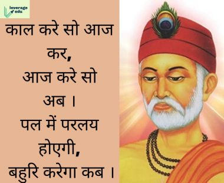
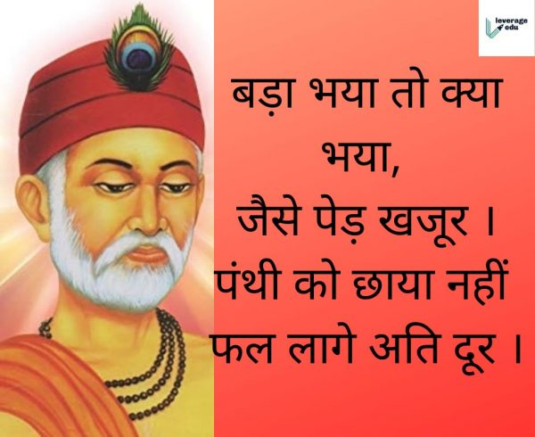
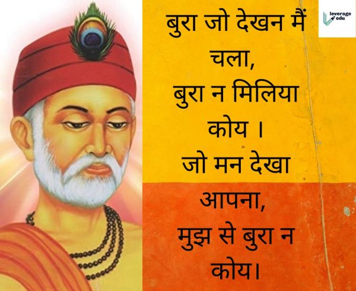

कबीर के दोहे
1. काल करे सो आज कर, आज करे सो अब ।
पल में परलय होएगी, बहुरि करेगा कब ।

इसका भावार्थ है कि कबीर दास जी हमें यह समझाते हैं कि हम सब के पास समय बहुत ही कम है इसलिए जो काम हम काम कल करने वाले थे उसे आज करो और जो काम आज करने वाले हैं उसे अभी करो क्योंकि पल भर में प्रलय आ जाएगा तो आप अपना काम कब करोगे , इसमें हमें समय के महत्व के बारे में बताते हैं।
2. गुरु गोविंद दोऊ खड़े ,काके लागू पाय ।
बलिहारी गुरु आपने , गोविंद दियो मिलाय ।।
इसका यह भावार्थ है कि कबीर दास जी इस दोहे में हमें समझाते हैं अगर उनके सामने गुरु और भगवान को साथ में खड़े करते हैं तो आप किस के चरण स्पर्श करेंगे? वो कहते हैं गुरु ने अपने ज्ञान से उन्हें भगवान से मिलने का रास्ता बताया है तो उनके अनुसार गुरु की महिमा भगवान से भी ऊपर है इसलिए वह गुरु के चरण स्पर्श करना चाहेंगे।
3. ऐसी वाणी बोलिए मन का आप खोये ।
औरन को शीतल करे, आपहुं शीतल होए ।
इसका यह भावार्थ है कि कबीर दास जी हमें यह समझाते हैं कि हमेशा ऐसी भाषा बोलने चाहिए जो सामने वाले को सुनने से अच्छा लगे और उन्हें सुख की अनुभूति हो और साथ ही खुद को भी आनंद का अनुभव हो।
4. बड़ा भया तो क्या भया, जैसे पेड़ खजूर ।
पंथी को छाया नहीं फल लागे अति दूर ।

इसका यह भावार्थ है कि कबीर दास जी कहते हैं की खजूर का पेड़ बहुत ही बड़ा होता है और वह किसी को छाया भी नहीं देता और साथ में उसके फल भी ऊंचाई पर लगते हैं, ठीक उसी तरह अगर आप किसी का भी भला नहीं कर पा रहे तो ऐसे बड़े होने का कोई भी फायदा नहीं है।
5. बुरा जो देखन मैं चला, बुरा न मिलिया कोय ।
जो मन देखा आपना, मुझ से बुरा न कोय ।

इसका यह भावार्थ है कि कबीर दास जी यह कहते हैं की वह सारा जीवन दूसरों की बुराइयां देखने में लगे रहे थे लेकिन जब उन्होंने अपने खुद में जाकर देखा तो उन्हें लगा कि उनसे बुरा इंसान कोई भी नहीं है। वह सबसे स्वार्थी और बुरे हैं , ठीक उसी तरह दूसरे लोग भी दूसरे के अंदर बुराइयां देखते हैं परंतु खुद के अंदर कभी जाकर नहीं देखते अगर वह खुद के अंदर झांक कर देखे तो उन्हें भी पता चलेगा कि उनसे बुरा इंसान कोई भी नहीं है।
6. दुःख में सुमिरन सब करे, सुख में करे न कोय ।
जो सुख में सुमिरन करे, तो दुःख काहे को होय ।

इसका यह भावार्थ है कि कबीर दास जी हमें यह कहते हैं कि इंसान हमेशा दुख में ही भगवान को याद करता है परंतु सुख आने पर भगवान को भूल जाते हैं। परंतु अगर हम ईश्वर को सुख में भी याद करेंगे तो हमें दुख कभी नहीं आएगा।
7.चलती चक्की देख के, दिया कबीरा रोये ।
दो पाटन के बीच में, साबुत बचा न कोए ।
इसका भावार्थ है कि कबीर दास जी जब चलती चक्की को देखता है तब उनकी आंखों में से आंसू निकल आते हैं और कहते हैं कि चक्की के पाटों के बीच कुछ साबुत नहीं बचता।
8. जाती न पूछो साधू की, पूछ लीजिये ज्ञान ।
मोल करो तलवार का, पड़ा रहने दो म्यान ।

इसका यह भावार्थ है कबीर दास जी यह कहते हैं साधु से हमें कभी भी उसकी जाति नहीं पूछनी चाहिए परंतु उनके साथ ज्ञान की बातें करनी चाहिए और उनसे ज्ञान लेना चाहिए। अगर मूल करना है तो तलवार से करो मैं उनको पड़े रहने दो।
9. सब धरती काजग करू, लेखनी सब वनराज ।
सात समुद्र की मसि करूँ, गुरु गुण लिखा न जाए ।

इसका भावार्थ है कि कबीर दास जी यह कहते हैं अगर वह पूरी धरती के बराबर इतना बड़ा कागज बना दे और दुनिया की सभी वृक्षों से कलम बना ले और सातों समुद्रों के बराबर सही बना ले तो भी वह गुरु के गुणों को लिखना असंभव है।
10. मलिन आवत देख के, कलियन कहे पुकार ।
फूले फूले चुन लिए, कलि हमारी बार ।
इसका भावार्थ है कि कबीरदास जी कहते हैं बगीचे में जब कलियां माली को आकर देखती है तब आपस में बातचीत करती है कि माली आज फूल को तोड़ कर ले कर गया फिर कल हमारी भी बारी आएगी।कबीर दास जी यह समझाना चाहते हैं कि आज आप जवान हैं तो कल आप भी बुड्ढे हो जाओगे , और मिट्टी में भी मिल जाओगे।